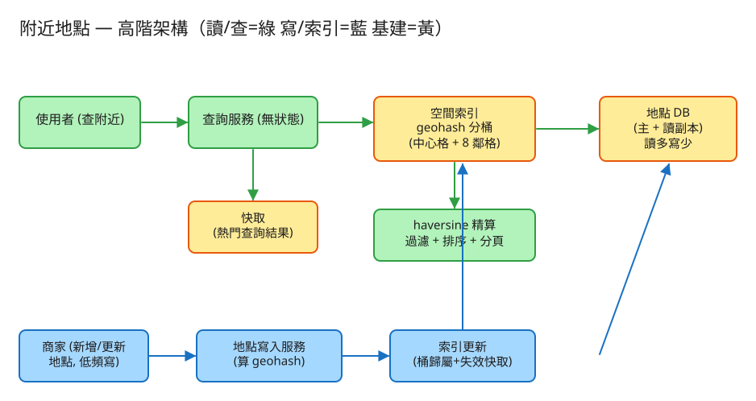

⑱ 附近的人 / 地點 · 初學者友善版
G 搜尋/索引
看故事就懂
輕鬆讀 25 分鐘
🧠 這份怎麼讀？
這份用「大腦比較好吸收」的方式重寫：先講生活比喻 → 把系統拆成小關卡 → 邊讀邊考自己。
分成兩部分：Part 1 概念（這系統在幹嘛）、Part 2 工程細節（怎麼真的蓋出來，一樣白話）。
遇到 💭 停一下 就先自己想 3 秒再往下看——這叫「提取練習」，比一直往下滑記得更牢。
1. 60 秒搞懂它在幹嘛
你打開手機 App，按下「找附近的咖啡廳」。一秒內，畫面跳出離你最近、由近到遠排好的店家。
Yelp、Google Maps、外送 App「找附近餐廳」都是在做這件事。
聽起來很簡單對吧？但系統手上有全球 2 億家店，而你只想要「我腳邊那一圈」。
難就難在：怎麼從 2 億家裡，在你滑動地圖的瞬間，挑出你身邊那幾十家、還順手排好序？
🔑 一句話
找附近 = 用「位置郵遞區號」先框出同一格的店，再精算距離排序：先粗略框出一小撮候選，再仔細量距離，最後由近到遠排好。
2. 為什麼「找附近」這麼難？
很多人第一個想法是：「不就把每家店量一下距離，挑最近的嗎？」——對，但 2 億家店都量一遍，等你算完天都黑了。
我們需要一個「不用全部量，就能先框出附近」的辦法。先看一個你早就會的生活經驗——
📮 郵遞區號 / 地址前幾個字
你要找「住我家附近的人」，不會把全國電話簿從頭一個個量距離。
你會先看郵遞區號或地址前幾個字，先框出「跟我同一區」的人，這群通常就在附近，再從這一小撮細看。
關鍵在：地址前幾個字一樣 = 大概住在同一塊。系統把這招用在地圖上，靠的就是一個叫 geohash 的東西。
🗺️ geohash：地圖的郵遞區號
把整張地圖切成一格一格的小網格，每格給一個短代碼（像 wsq6m）。
巧妙的地方是：位置越接近，代碼開頭就越像。於是「找附近」就變成「找代碼開頭一樣的店」——這是電腦最擅長、最快的事（比字串開頭）。
💭 停一下：為什麼把「二維的經緯度」變成「一個字串代碼」之後，找附近反而變快了？
看答案
因為「同時靠近某經度又靠近某緯度」是兩個維度的條件，電腦的一般索引（B-Tree）一次只擅長處理一個欄位，兩個一起就卡。geohash 把「位置」壓成一條字串，而且「開頭一樣 = 地理相近」，於是二維的「找附近」就退化成一維的「比字串開頭」——這正是資料庫最快的操作。這就是 geohash 存在的理由。
3. 把系統拆成 3 個關卡
別被「地理空間搜尋」嚇到。整件事其實就是闖 3 關，一關一關來：
1粗篩：先用「郵遞區號」框出同格的店
你站在某個位置，系統先算出「你在哪一格」（你的 geohash），再撈出這一格裡的所有店。
一格大概一兩公里見方，市區一格裡通常就幾十到幾百家——一下子從 2 億縮到幾十家。
📮 比喻就像找附近的人先看「同郵遞區號」：先不管精確距離，先把範圍縮到同一區，把茫茫大海變成一個小池塘。
2補鄰格：你站在格子邊緣怎麼辦？
這是最容易被忽略、卻最致命的細節。想像你站在自己這格的最右邊，真正離你最近的咖啡廳，
其實在隔壁那一格——只差幾公尺，但代碼開頭不一樣，只查你這格就漏掉它了。
🏠 比喻：你家在巷口，最近的超商在隔壁里
你家剛好在「里」的邊界上，最近的超商明明就在馬路對面，卻屬於隔壁的里。
只查「自己里」會錯過它。聰明的做法是：連旁邊的里一起看。
所以系統的鐵律是：不只查你這格，連周圍 8 格一起撈，總共 9 格（中心 + 上下左右斜角）。
這 9 格的店全當「候選人」，寧可多撈，不可漏掉就在隔壁格的鄰居。
👉 這跟第②題地震預警「連旁邊 8 格一起撈，免得漏掉邊界上的人」是同一招——一個是找店、一個是找人，但「補鄰格防漏」的道理一模一樣。
3精算：量真實距離，由近到遠排好
現在手上只剩 9 格裡的幾十家候選，數量小到可以一家一家精算了。系統對每家算出「離你實際幾公里」（用一個叫 haversine 的地球距離公式），
然後：丟掉半徑外的 → 順手過濾條件（只要餐廳、評分 4 星以上）→ 由近到遠排序 → 分頁送回前 20 家。
🎯 比喻：先海選，再評分
像選秀節目：第 1～2 關是「海選」（快速刷掉一大半，只看大概）；第 3 關是「細評」（對剩下的人仔細打分、排名次）。
先粗後細，才不會把時間浪費在量 2 億家身上。
✅ 三關一句話
① 用 geohash 框出你這格 → ② 連周圍 8 格一起撈（防邊界漏掉）→ ③ 對這幾十家精算距離、過濾、排序。粗篩→細算，就這樣。
4. 設計時最怕的 3 件事
工程上的「取捨」聽起來很抽象。換個方式記：這個系統最怕三件事，每個設計都是為了避開某個「怕」。
😱 怕「漏掉最近的那家」
使用者最氣的就是：明明對面就有一家，App 卻沒列出來。罪魁禍首通常是格子邊界。
所以鐵律是一律多撈周圍 8 格，寧可多算幾家，也不能讓「就在隔壁格的鄰居」消失。寧可多撈，不可漏。
😱 怕「慢」
你在地圖上滑動、縮放，每個動作都要立刻出結果（< 0.1 秒）。如果還傻傻地量 2 億家，早就卡死。
所以一定要先粗篩、再精算，而且把熱門商圈的查詢結果快取起來（大家都在搜信義區，算一次就好）。先框小範圍，才談精算。
😱 怕「格子大小選錯」
格子畫太大 → 一格裝太多店，精算時要量一大堆（慢）；格子畫太小 → 你要的半徑超出一格，得撈更多鄰格才夠（也麻煩）。
訣竅是：讓一格的大小，差不多剛好等於大家常搜的半徑，最省力。格子大小要配合查詢半徑。
5. 一張圖看懂

✏️ 用 Excalidraw 開啟編輯（diagram.excalidraw）
白話導讀，分成「寫」和「讀」兩條路：
- ✍️ 寫（很少發生）：商家開店或改資料 → 系統幫它算好 geohash 代碼 → 存進地點資料庫 + 更新網格索引。
- 🔍 讀（超級頻繁）：你搜「附近咖啡廳」→ 先看快取有沒有現成答案（熱門商圈常有）→
- 🗺️ 沒有的話，查網格索引：算出你的格子 + 周圍 8 格共 9 格，撈出候選店 →
- 📏 對候選店用 haversine 精算距離 → 過濾（半徑/類別/評分）→ 由近到遠排序 →
- 📱 把前 20 家（含「距離 0.3 公里」這種標示）送回你的手機。
6. 名詞白話翻譯
看完上面，這些詞你其實都已經懂了，這裡只是把「工程術語 ↔ 白話」對起來，Part 2 會用到：
| 工程術語 | 白話解釋 |
|---|
| geohash | 位置的「郵遞區號」：把地圖切成網格，每格一個代碼，開頭越像 = 越接近 |
| 粗篩 / 細篩 | 先用格子框出一小撮候選（粗），再對候選精算距離（細） |
| 中心格 + 8 鄰格 | 查你這格時連周圍 8 格一起查（共 9 格），防止漏掉邊界上的店 |
| haversine | 算地球上兩點實際距離的公式（細篩、排序用） |
| 半徑查詢 | 「離我 2 公里內的店」，由近到遠排序 |
| 最近 K 查詢 | 「離我最近的 5 家」（就算超過半徑也要湊滿） |
| 讀多寫少 | 查詢超頻繁、商家資料幾乎不變——所以拚命優化「讀」 |
| 快取 (Cache) | 把熱門查詢的答案先存起來，下次直接給，不用重算 |
| 讀副本 | 多複製幾份資料庫專門應付「查詢」，分擔讀的壓力 |
| QPS | 每秒幾筆請求（衡量「多忙」的單位） |
| API | 系統之間講好的「點餐單」格式：你給我什麼、我回你什麼 |
| QuadTree / S2 | 比 geohash 更聰明的網格：人多的地方切細、人少的地方切粗 |
🛠️ Part 2 ｜ 工程細節（一樣白話）
概念懂了，來看「真的要動手蓋，得想清楚哪些事」。一樣用比喻，不用怕。
7. 要準備多大？（規模估算）
🍱 比喻：辦活動前先估人數
辦活動前，你會先估「大概來幾個人」，才決定訂幾個便當、租多大場地。
系統設計也一樣：先估數字，才知道要準備多大的「料」。這一步叫規模估算。
我們估幾個關鍵數字（數字不必背，重點是感受它的「形狀」）：
| 估什麼 | 大概數字 | 所以呢？ |
|---|
| 全球有多少店 | ~2 億家 | 聽起來嚇人，但… |
| 這些資料佔多大 | 每家約 1KB → 共約 200 GB | 其實整份索引塞得進一台機器的記憶體，不算大 |
| 每秒多少人在搜 | 5 千萬人 × 每天 10 次 ≈ 每秒約 6 千次（尖峰再 ×5） | 讀非常頻繁，要拚命優化查詢 |
| 每秒多少店在改資料 | 每秒不到 100 次 | 寫超少——讀比寫多 100 倍以上 |
📚 關鍵洞察：圖書館 vs 菜市場
這系統像一座圖書館：書（店家資料）幾乎不動，但一整天有無數人來借閱（查詢）。
不像菜市場那樣貨物一直進進出出。既然「讀爆、寫超少」，整套設計就圍繞「把讀做到飛快」：
資料全放記憶體、熱門查詢存快取、多複製幾份資料庫專門應付查詢。
💭 停一下：既然「讀多寫少」，為什麼可以「大膽快取查詢結果」？
看答案
因為快取最怕「資料一直變、存起來馬上就過期」。但這題的店家座標幾乎不動，所以「信義區附近的咖啡廳」這個答案可以存很久都還是對的，下次有人搜同樣的就直接給，不用重算。而且大家的搜尋很集中（都在熱門商圈），快取命中率超高。只有商家改了資料時，才主動把相關快取清掉。8. 系統之間怎麼溝通？（API）
🍔 比喻：點餐單
API 就是兩個系統之間講好的「點餐單格式」：你要點什麼（給我哪些欄位）、我回你什麼。
講好格式，雙方就能合作，不用知道對方廚房怎麼運作。
這題只要記住三張「點餐單」：
① 找附近的店（最常用，每秒幾千次）
GET /places/nearby?lat=我的緯度&lng=我的經度&radius=2km
&category=restaurant&min_rating=4.0&limit=20
我回：{ 結果:[ {店名, 離你0.11公里, ...} ], 共幾家, 下一頁從哪開始 }
看懂這張單就懂這題了：給我「你在哪 + 半徑 + 條件」，我回你「由近到遠排好的店，附上距離」。limit=20 是一次只給 20 家（分頁），你滑到底再要下一批。
② 找最近的 K 家（不限半徑，一定湊滿）
GET /places/nearest?lat=..&lng=..&k=5&category=cafe
→ 就算你在郊區、附近很空，也保證找出最近的 5 家
跟①的差別：①問「這個圈圈裡有誰」（可能空空如也）；②問「不管多遠，給我最近的 5 家」（一定有答案）。
③ 新增 / 改店家資料（很少用）
POST /places 給我：{ 店名, 類別, 評分, 經緯度 }
PATCH /places/{店家編號} 例：把評分改成 4.7
注意：改了座標就要重算 geohash 代碼、更新網格索引、清掉相關快取（不然你會查到舊答案）。但因為寫很少，這點麻煩可以接受。
9. 系統要記住哪些事？（資料模型）
📒 比喻：兩本筆記本
系統要把資料記在「筆記本」（資料表）裡。這題其實只要兩本：一本記「店」、一本記「哪些店在哪一格」。
🏪店家簿（每家店的基本資料）
每家店一列：店家編號、店名、類別、評分、經緯度、geohash。
為什麼多存一欄 geohash？
把每家店的「郵遞區號代碼」在開店登記時就算好寫進去，使用者來搜時才能用前綴秒查同格的店。
如果每次有人搜才一家家算代碼，2 億家算到天荒地老——這叫「預先算好，換查詢飛快」。
把評分、類別也放同一列，精算距離時順手就把不符條件的刷掉。
🗂️網格索引（每一格裝了哪些店）
一個對照表：geohash 代碼 → 這格裡的店家清單。代碼開頭一樣的，地理上就相鄰。
比喻：圖書館的索引卡
就像圖書館不會讓你一櫃一櫃翻書，而是給你一張「分類號 → 在哪一櫃」的索引卡。
網格索引就是地圖版的索引卡：給代碼，秒查這格有哪些店。這份索引小到可以整個放進記憶體，查起來飛快。
補充：實務上常直接用 Redis 的「GEO」功能，它底層就是 geohash 排序集，幫你把上面這套打包好。但原理就是這兩本簿子。
10. 哪裡會塞車、怎麼拓寬？（擴展）
🚗 比喻：找出塞車路段，拓寬它
系統變大時，總有某個環節會先「塞車」。工程師的工作就是找出最會塞的地方，把它拓寬。一個一個看：
| 哪裡會塞車 | 怎麼拓寬 |
|---|
| 查詢：2 億家一個個量距離 | 用網格索引（郵遞區號法）先粗篩 9 格，再對幾十家細算 |
| 大家都在搜同一個熱門商圈 | 把熱門查詢的答案快取起來，下次直接給，不重算 |
| 查詢太多，一台資料庫扛不住 | 多複製幾份讀副本專門應付查詢（反正店家資料幾乎不變） |
| 市區一格擠了一堆店、海上的格子卻空空 | 改用QuadTree / S2：人多的地方切細、人少的地方切粗（密度自適應） |
| 全球使用者，跨洲查詢很慢 | 各大洲就近放一份服務和快取，台灣的人查台灣的機器 |
11. 還有哪些「魚與熊掌」？（取捨）
「Part 1 的三個怕」是核心。這裡補幾個常被面試官追問的：
⚖️ 簡單(geohash) vs 聰明(QuadTree/S2)
geohash 超好實作（普通字串索引就能跑），但格子大小固定、有邊界問題；QuadTree/S2 會依密度自動調整、邊界處理好，但複雜。
面試先講 geohash（好寫好答），再補一句「資料密度極不均（市區 vs 海上）時改 QuadTree/S2」。
⚖️ 精確 vs 近似
地圖類通常「先填滿你畫面看得到的範圍」就好（近似），不必嚴格算半徑。只有真要「嚴格 2 公里內」才對每家精算 haversine。能近似就省力。
⚖️ 格子畫多大？
格子太大 → 一格店太多、精算慢；太小 → 半徑超過一格、要撈更多鄰格。取一個剛好接近常見查詢半徑的大小，並一律多撈周圍 8 格保險。
💭 追問：如果是找「附近的人」（會移動），跟找店有什麼不同？
店的座標幾乎不變（讀多寫少，主攻快取＋讀副本）；但「人」一直在移動，位置要高頻更新，且舊位置要快速過期（短 TTL）。這就變成另一種題型（接近即時叫車／媒合）。本題是靜態的版本。💭 追問：為什麼不用兩個一般索引——一個記經度、一個記緯度？
因為「同時靠近某經度且靠近某緯度」是把兩個範圍交集，一般索引各自只擅長一個維度，交集起來效率很差。geohash 的高明就是把二維「壓成」一維字串，讓「找附近」變成「比字串開頭」。12. 動手玩玩看
讀十遍不如玩一遍。這題有一個真的可以跑的小程式，讓你親眼看到「粗篩 9 格 + 精算排序」：
# 啟動（在這題的 demo 資料夾裡）
cd demo
php -S localhost:8018 -t public
# 然後瀏覽器打開 http://localhost:8018
- 先按「塞入示範地點」（等於在地圖上放一堆店）。
- 輸入你的座標和半徑 → 做「半徑查詢」或「最近 K」。
- 觀察回應裡的
buckets_scanned：那就是它實際掃描的 9 個 geohash 格子（中心 + 8 鄰格）。
玩的時候想一下把座標移到一格的邊緣，看看「9 格粗篩」是不是仍然抓到了隔壁格的店——這就是關卡 2 的補鄰格防漏在運作。把半徑調很小，看結果怎麼變少；把它調很大，看它是不是得掃更多格子。
13. 考考自己
先不要看答案，自己用講給朋友聽的方式回答看看（講得出來才是真的懂）：
Q1：用「郵遞區號」解釋，為什麼不用把 2 億家店一個個量距離？
因為 geohash 把每個位置編成一個代碼，「開頭一樣 = 地理相近」。先用你所在那格的代碼前綴，秒撈出同格的幾十家店當候選，再對這一小撮精算距離——先粗篩、再細算，不用碰其他 1.9999 億家。Q2：什麼是「邊界問題」？為什麼要查「中心格 + 8 鄰格」？
geohash 把連續的地圖切成硬邊界的格子，兩個只差幾公尺的點可能落在不同格（代碼開頭不同）。如果你站在格子邊緣，最近的店可能在隔壁格，只查自己這格就漏了。所以一律多撈周圍 8 格共 9 格做粗篩——寧可多撈，不可漏。Q3：「半徑查詢」和「最近 K 查詢」差在哪？
半徑查詢問「離我 X 公里內有哪些店」，可能一家都沒有（郊區）。最近 K 查詢問「不管多遠，給我最近的 K 家」，保證湊滿——附近不夠就放大格子（縮短 geohash 前綴）繼續找。Q4：這題跟第②題地震預警有什麼共通點？
都用 geohash 把位置變成「郵遞區號」做空間篩選，而且都要「連旁邊 8 格一起撈，免得漏掉邊界上的目標」。差別只在一個找店、一個找人；一個重排序、一個重同時推播（fan-out）。Q5（工程）：為什麼店家簿要「事先存好 geohash」這一欄？
使用者來搜時才一家家算代碼，2 億家會慢死。開店登記時就把代碼算好寫進去並建索引，查詢就退化成「比字串開頭」，飛快。預先算好，換查詢飛快。Q6（工程）：這題「讀多寫少」，設計上帶來什麼好處？
店家資料幾乎不變 → 查詢結果可以「大膽快取」（存很久都還對）、可以多開「讀副本」分擔查詢、索引整份塞進記憶體。寫路徑很輕鬆，火力全集中在把「讀」做到飛快。Q7（工程）：什麼時候 geohash 會不夠用？要換成什麼？
當資料密度極不均（市區一格擠爆、海上的格子全空）時，geohash 固定格子大小就不划算。改用 QuadTree 或 Google S2：人多的地方自動切細、人少的地方切粗，邊界處理也更精確。14. 30 秒回顧
找附近 = 用「位置郵遞區號(geohash)」先框出同格的店，再精算距離排序。
3 個關卡：① 用 geohash 框出你這格 → ② 連周圍 8 格一起撈（防邊界漏掉）→ ③ 對這幾十家精算距離、過濾、由近到遠排序。
3 個怕：怕漏掉最近那家（一律多撈 8 鄰格）、怕慢（先粗篩再精算＋快取熱門查詢）、怕格子大小選錯（讓格子≈常見半徑）。
工程細節一句話：資料量不大但「讀爆寫少」像圖書館 → 用「點餐單(API)」溝通 → 兩本簿子（店家簿＋網格索引）＋預存 geohash → 拚命優化讀（快取＋讀副本＋索引進記憶體），密度太不均就升級成 QuadTree / S2。
想看更精簡、面試速查用的版本？👉 前往完整版（同樣內容的工程速查格式）。